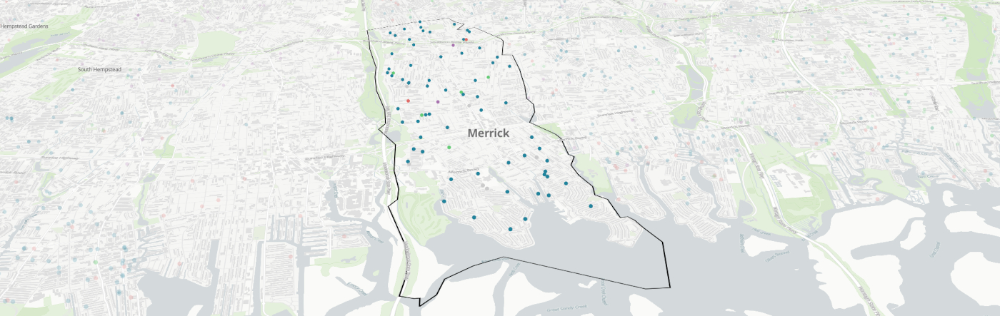

Week 3: School Segregation Continued
Seminar: Monday, Feb 05

Goals: Consider the relationship between real estate, housing, and school segregation. Look at “active” and “passive” segregation and how it is maintained. Discuss how spatial design and data visualization can be used to tell a story about segregation.
Readings due:
- Carrozzo, A. (2019, November 17). Undercover investigation reveals evidence of unequal treatment by real estate agents. Newsday.
Agenda:
- Space and Design
- Reading Discussion
- Assignment 1 Questions
- Lab Preview
Lab: Wednesday, Feb 07

Goals: In this lab we will look at how to include images, audio, and video in our web pages, and how to use CSS to style our pages. We will also learn how to code our pages so they can be plotted as a point on a map.
Optional Readings and Resources:
- MDN: Dealing with files. Where should the files go for your website?
- MDN: CSS Basics
- MDN: Named Colors
Agenda:
- Upcoming assignment: more info and Q&A
- Demos:
- adding an image (or font, audio, video, other media)
- including CSS
- CSS selectors
- box model: width, height, padding, margin, border
- horizontal centering (
margin: 0 auto)
- horizontal centering (
- “containers”:
<div>, <span>, <main>, <section>, <nav>, <header>, <footer> - adding background colors and images
- adding a map point
- AI chat for help
- Practice:
- open and “fork” the Mapping Points Codesandbox
- add 2 new web pages to your school project
- incorporate the new elements we learned about today
- look up some other CSS properties and try them out
- plot your HTML on the map
- share on Discord
- Homework:
- Read the seminar articles
- Turn in assignment 1
- Prepare for the next lab
Lab Links:
Map Resources
Think about the maps we have seen in class so far as examples.
- NY Times Interactive (note you can access NYT for free as an Adelphi student)
- Maps by NYC
- Maps by the CDC
- Maps by the Census
- Data Wrapper
- Map Room Blog Some interesting maps are discussed on this blog.
- Bloomberg MapLab
You can pick a topic of interest to you and search “___ + maps.” Look for reputable journalistic outlets, like newspapers (wall street journal, Washington post) or well-known web magazines (slate, vox). For example, if you are interested in cicadas, you can google and find: https://www.vox.com/science/24047261/cicada-brood-xix-xiii-19-13-map
Readings out
(due before next class)
- seminar
- Wines, M. (2019, June 27). What Is Gerrymandering? And How Does It Work? The New York Times.
- Meyers, D. (2019, November 7). Experts identify the worst examples of gerrymandering. The Fulcrum. [blog]